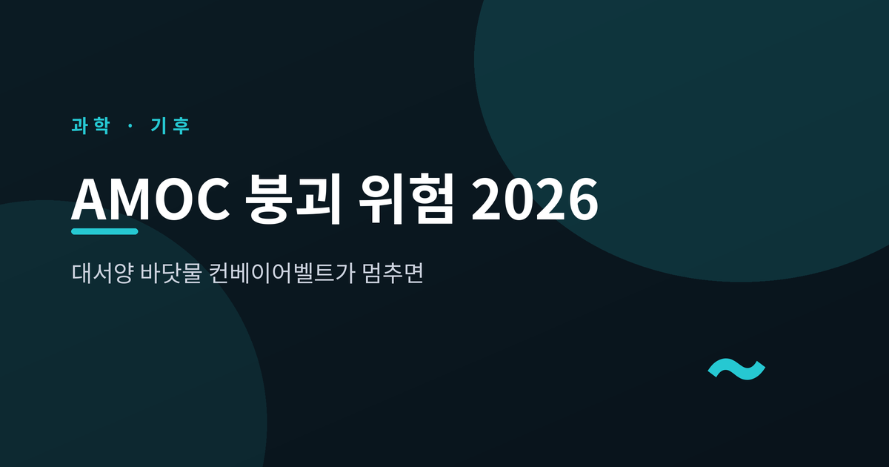
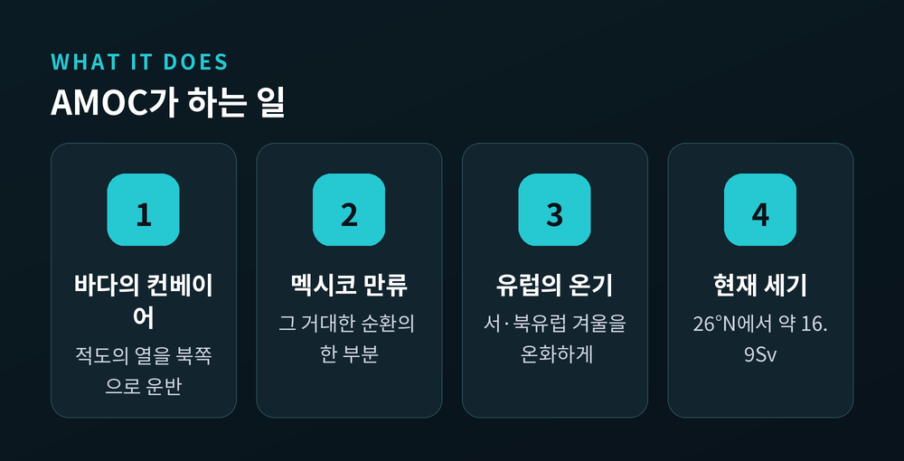
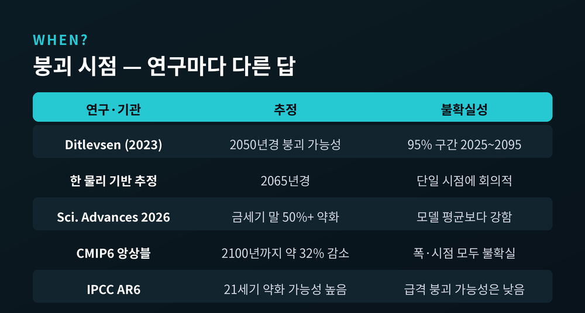
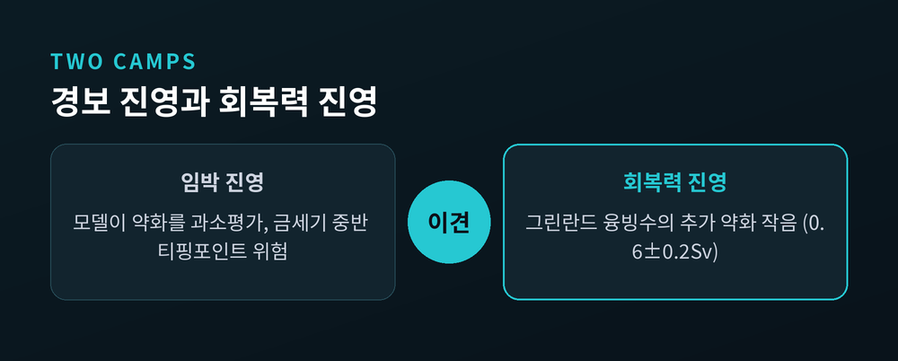

대서양 바닷물 컨베이어벨트가 멈추면

이번 글에서는 대서양의 거대한 해류 AMOC가 정말 멈출 수 있는지, 2026년 시점의 연구를 정리해 보겠습니다.
결론부터 말씀드리면, 약해지고 있다는 데에는 폭넓은 합의가 있지만 언제 붕괴할지는 아직 아무도 단정하지 못합니다.
경보를 울리는 쪽과 생각보다 회복력이 있다고 보는 쪽, 양쪽 견해를 함께 살펴보려 합니다.
AMOC는 대서양 자오선 역전 순환을 줄인 말입니다.
적도의 따뜻한 표층수를 북쪽으로 실어 나르고, 북대서양 고위도에서 차갑고 무거워진 물이 가라앉아 다시 남쪽 심해로 흐르는 거대한 컨베이어벨트입니다.
우리에게 익숙한 멕시코 만류(걸프 스트림)도 이 순환의 한 부분입니다.
이 순환은 열대의 열을 유럽 쪽으로 운반합니다.
덕분에 서유럽과 북유럽은 같은 위도의 다른 지역보다 겨울이 온화합니다.
바꿔 말하면, 이 흐름이 약해지면 북대서양과 유럽의 열 공급이 줄어든다는 뜻입니다.
현재 26°N 지점에서 측정된 AMOC의 세기는 2005~2023년 평균 약 16.9Sv입니다.
Sv는 스베드럽이라는 단위로, 1Sv는 초당 100만 세제곱미터의 물을 옮기는 규모를 가리킵니다.

AMOC가 약해지고 있다는 신호는 여러 곳에서 나옵니다.
26°N에 설치된 직접 계류 관측(RAPID)은 2004~2023년 사이 약화 추세를 보고했습니다.
다만 수치 표현은 자료마다 조금씩 다릅니다.
10년당 2.6±0.7Sv 감소로 적힌 자료가 있고, 10년당 약 1Sv 약화로 표현한 자료도 있습니다.
측정 기간과 대상의 정의가 달라 생긴 차이로 보입니다.
지난 약 20년 동안 서로 다른 네 개 위도에서 약화가 확인됐다는 분석도 있습니다.
위성 자료에서는 케이프 해터러스 인근 걸프 스트림 경로가 북쪽으로 이동하는 흐름이 통계적으로 유의하게 나타났습니다.
그린란드와 아이슬란드 남쪽 해역에서 관측되는 '콜드 블롭'도 자주 언급됩니다.
주변과 달리 수온이 낮게 유지되는 영역으로, 열대의 열이 덜 실려 온다는 정황 증거로 인용됩니다.
AMOC가 주목받는 이유는 '티핑포인트(임계점)' 때문입니다.
과거 빙하기 자료를 보면 AMOC는 강한 상태와 약한 상태, 두 가지 안정 상태를 오간 흔적이 있습니다.
이를 쌍안정성이라 부릅니다.
임계점을 넘으면 비선형적으로 약한 상태로 넘어가고, 한 번 넘어가면 되돌리기 어려울 수 있다는 우려입니다.
시스템이 임계점에 가까워지면 '임계 감속'이라는 신호가 나타난다고 봅니다.
시계열의 분산과 자기상관이 함께 커지는 현상입니다.
실제로 일부 분석은 이 두 지표가 모두 증가하고 있다고 보고했습니다.
다만 주의할 점이 있습니다.
이런 조기 경보 신호는 거짓 양성에 취약하고, 분석에 쓰인 수온 기반 재구성 자체가 큰 불확실성을 안고 있다는 비판이 함께 제기됩니다.
가장 궁금한 대목일 것입니다.
그러나 여기서부터 답이 크게 갈립니다.

| 연구·기관 | 붕괴/약화 추정 | 불확실성 |
|---|---|---|
| Ditlevsen & Ditlevsen (2023) | 2050년경 붕괴 가능성 | 95% 구간 2025~2095, 매우 넓음 |
| 한 물리 기반 추정 | 2065년경(2057에서 수정) | 다수 과학자가 단일 시점에 회의적 |
| Science Advances (2026) | 금세기 말까지 50% 이상 약화 | 모델 평균보다 약 60% 강한 약화 |
| CMIP6 모델 앙상블 | 2100년까지 32±37% 감소 | 폭과 시점 모두 불확실 |
| IPCC AR6 | 21세기 약화는 매우 가능성 높음 | 2100년 전 급격한 붕괴는 medium confidence |
표에서 보이듯 약화가 진행 중이라는 데에는 넓은 합의가 있습니다.
반면 '언제 붕괴하는가'는 추정 구간이 70년에 걸칠 만큼 불확실합니다.
특정 연도를 단정하는 보도가 있다면, 그 단정 자체를 의심하시는 편이 안전합니다.
붕괴 시 예상되는 영향은 직관과 반대입니다.
지구가 더워지는데 유럽은 추워질 수 있습니다.
모의실험에 따르면 영국·스칸디나비아·서유럽 연안의 겨울 평균기온이 수십 년 내 최대 5~10°C 떨어질 수 있습니다.
온실가스로 인한 온난화가 이 냉각을 상쇄하지 못한다는 결과입니다.
오슬로의 겨울 극값이 약 -48°C까지 내려갈 수 있다는 추정도 있습니다.
해수면 상승도 가속됩니다.
미국 동부 해안과 유럽 대서양 연안에서 전 지구 평균보다 더 큰 상승이 예상되며, 일부 추정은 최대 약 50cm를 제시합니다.
여기에 해양의 탄소 흡수가 줄면서 대기 중 CO₂가 약 47~83ppm 늘고, 추가 온난화로 이어질 수 있습니다.
2026년 현재, 과학자들의 평가는 둘로 나뉩니다.

경보 측은 대부분의 기후모델이 약화를 과소평가하고 있다고 봅니다.
금세기 중반에 되돌릴 수 없는 셧다운에 이를 위험이 커지고 있다는 입장입니다.
회복력 측의 시선은 조금 다릅니다.
2026년 고해상도 해양모델 연구는 그린란드 융빙수로 인한 추가 약화가 작다고(0.6±0.2Sv) 보고했습니다.
융빙수가 붕괴를 앞당기는 효과가 종전 생각보다 작을 수 있다는 것입니다.
두 진영이 갈리는 지점은 분명합니다.
'약화가 진행 중'이라는 사실에는 모두 동의합니다.
다만 그 붕괴가 얼마나 임박했고 얼마나 되돌릴 수 없는지를 두고 평가가 엇갈립니다.
2026년에는 주요 심해 모니터링 시스템이 중단됐다는 보도까지 더해져, 감시 공백을 걱정하는 목소리도 있습니다.
정리하면 이렇습니다.
AMOC는 분명히 약해지고 있습니다.
그러나 붕괴 시점은 2050년설부터 2065년설, 2100년 이후까지 폭넓게 갈리고, 그린란드 융빙수의 무게도 아직 결론이 나지 않았습니다.
— "약화는 사실, 붕괴 시점은 미지수."
확실한 것과 불확실한 것을 구분해 읽는 일이, 지금 이 주제 앞에서 우리가 할 수 있는 가장 정직한 태도가 아닐까 생각합니다.